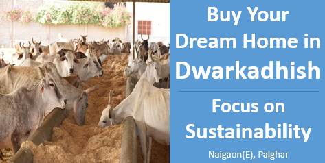

अपने सपनों का घर खरीदें द्वारकाधीश में:सततता पर ध्यान दें।
गौशाला
पर्यावरण जागरूक जीवन के लिए एक सतत आश्रय
सततता आजकल आधुनिक जीवन का एक महत्वपूर्ण हिस्सा बनती जा रही है, और गोशाला का समावेश एक आवासीय परियोजना को पर्यावरणीय रूप से जागरूक जीवन का प्रतीक बना सकता है। आज के समय में, जहां पर्यावरणीय समस्याएं कई लोगों के मन में प्राथमिकता पर हैं, गोशाला का प्रस्ताव प्रकृति और सतत जीवन की ओर एक वापसी को दर्शाता है। गोशाला को एक बड़े सतत पारिस्थितिकी तंत्र का हिस्सा के रूप में प्रस्तुत किया जा सकता है, जहां दूध उत्पाद सीधे गायों से प्राप्त किए जाते हैं, जिससे वाणिज्यिक डेयरी फार्मिंग और उससे जुड़े पर्यावरणीय प्रभावों की आवश्यकता कम होती है। इसके अतिरिक्त, गोवर्धन (गोमूत्र) से बायोगैस उत्पादन का उपयोग एक महत्वपूर्ण आकर्षण हो सकता है, जो साफ ऊर्जा की प्रथाओं के प्रति प्रतिबद्धता को दर्शाता है। गायों से उत्पन्न जैविक कचरे को खाद में बदलकर प्राकृतिक उर्वरक के रूप में इस्तेमाल किया जा सकता है, जिससे रासायनिक उर्वरकों की आवश्यकता कम होती है। इन सतत पहलुओं को बढ़ावा देकर, डेवलपर्स पर्यावरणीय रूप से जागरूक खरीदारों को आकर्षित कर सकते हैं, जो एक हरे, शून्य-अपशिष्ट पर्यावरण में जीने को महत्व देते हैं। एक ऐसे दुनिया में जहां लोग अपने पारिस्थितिकीय पदचिह्नों के प्रति अधिक जागरूक हो रहे हैं, गोशाला एक ऐसा तरीका प्रदान करती है जिससे लोग प्रकृति के साथ सामंजस्यपूर्ण ढंग से जी सकते हैं और पृथ्वी पर अपने प्रभाव को कम कर सकते हैं।
निष्कर्ष
एक आवासीय परियोजना में गोशाला को शामिल करना सततता को अपनाने का एक अनूठा और प्रभावशाली तरीका है, जो प्रकृति से गहरे संबंध को भी बढ़ावा देता है। जैविक डेयरी उत्पादों की आपूर्ति, गोवर्धन से बायोगैस का उत्पादन, और प्राकृतिक उर्वरकों के माध्यम से शून्य-अपशिष्ट प्रथाओं को बढ़ावा देकर डेवलपर्स एक आत्मनिर्भर पारिस्थितिकी तंत्र बना सकते हैं, जो पर्यावरणीय रूप से जागरूक खरीदारों को आकर्षित करता है। जैसे-जैसे लोग अपने पारिस्थितिकीय पदचिह्न के प्रति अधिक जागरूक हो रहे हैं, गोशाला सतत जीवन का प्रतीक बनकर उभरती है, जो आधुनिक जीवन और पर्यावरणीय जिम्मेदारी का सामंजस्यपूर्ण संयोजन प्रदान करती है। यह नवाचारी दृष्टिकोण न केवल परियोजना की मूल्यवृद्धि करता है, बल्कि एक हरे और अधिक सतत भविष्य में योगदान भी करता है।
Contact us
+91 72088 43484 / +91 72088 43487
kkcreateandbiuld@gmail.com
Radha Nilaya, Plot No. 164/2,
Bapane Village, Chandrapada Road,
Naigaon (E) - 401208,
Maharashtra, India.